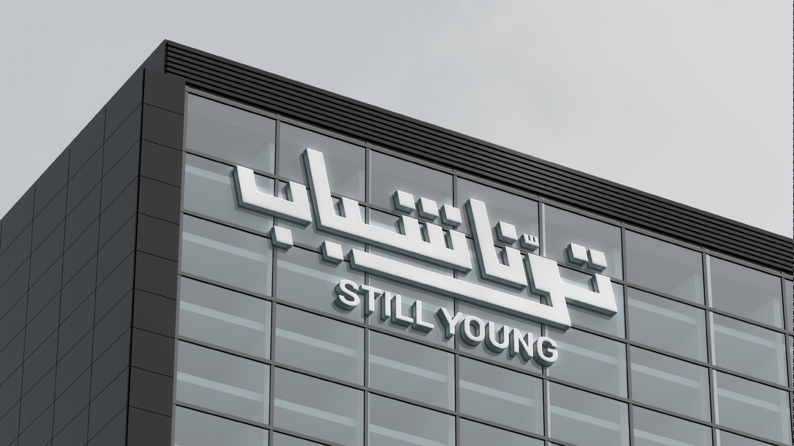
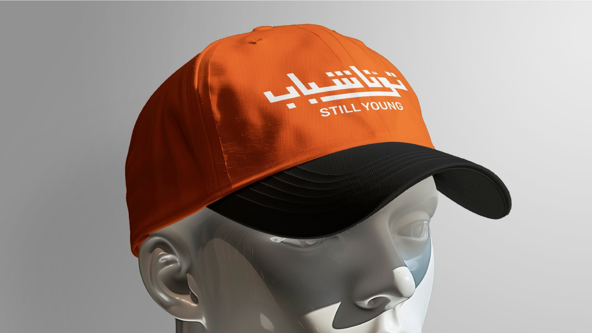
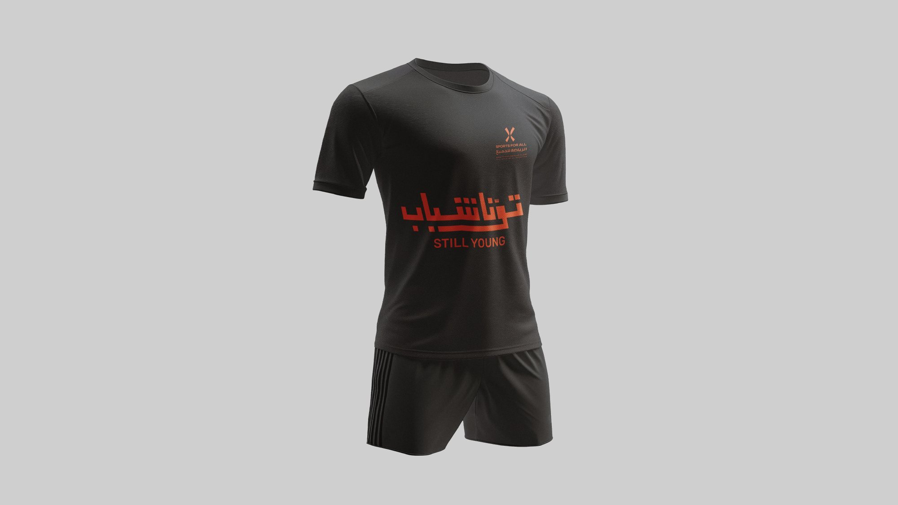
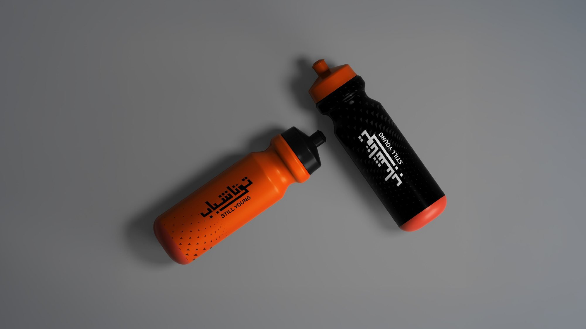
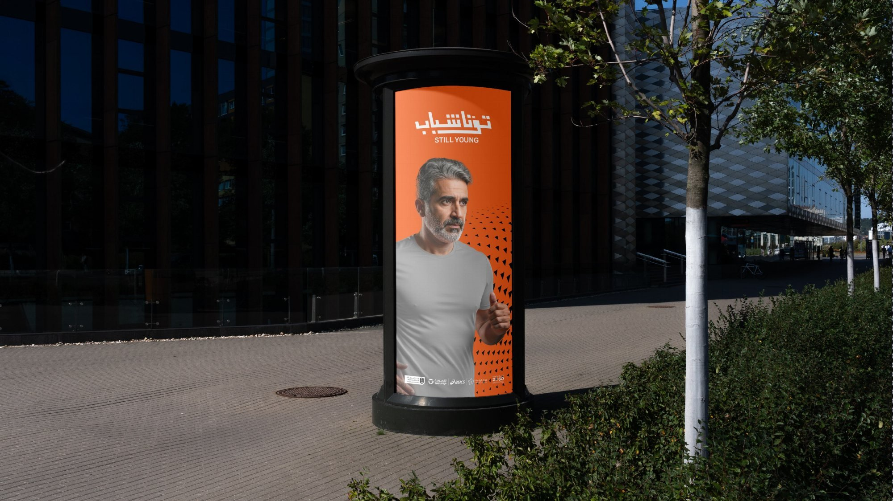
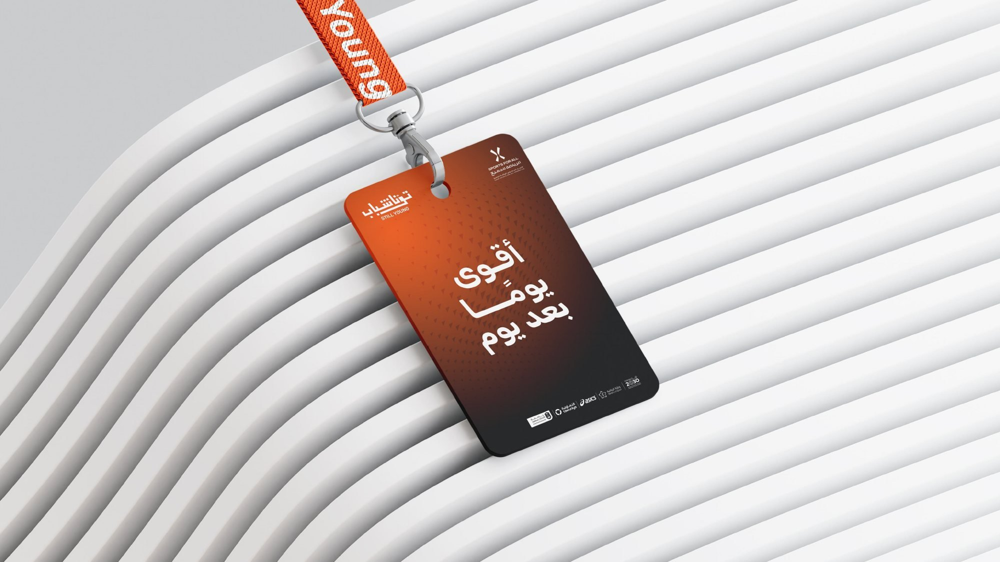
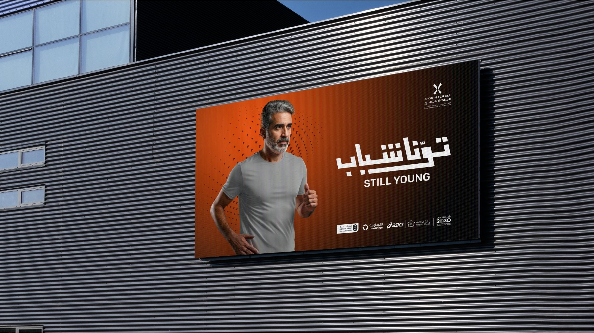
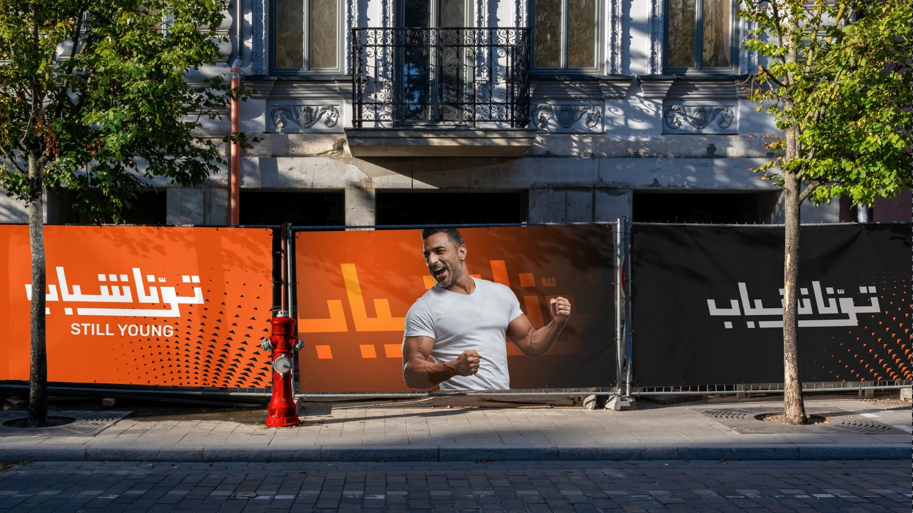

Still Young
Brand identity · The Momentum Path · توناشباب
Age is a stage, not a stop.
A programme that gets people aged 50 and above moving needed a name that moves first. توناشباب, “we’re still young”, is drawn in confident Arabic letters that lean forward, so the mark is already running before anyone reads it.
The Momentum Path
Hand-built Arabic letters laid on a slanted track: a starting point, a path, and the speed to keep going. It locks up with Sports for All in orange or black.
Orange, black, nothing to slow it down
One loud orange, a hard black and a cool grey. A dotted wave pattern carries the motion onto every surface.
Built to be worn
Kit, caps and bottles for the members; building signage, banners and billboards for the city; posts that keep them coming back.








On the feed
Posts that put real people over 50 at the centre, in the same orange and black as the kit.
Still young.
Still moving.
The mark, the colour and the people all lean the same way: forward.
